Más allá del string
Cómo convertir texto en datos con Python
Invalid Date
Ruta del taller
Agenda · 120 minutos
| # | Bloque | Presenta | Tiempo |
|---|---|---|---|
| 01 | Rompehielos e introducción | Biviana | 15 min |
| 02 | ¿Qué saber sobre el lenguaje? | Dora | 15 min |
| 03 | Del lenguaje a los datos | Karen | 25 min |
| 04 | Caso 1 · Columnas de opinión | Karen | 20 min |
| 05 | Caso 2 · Salud en Twitter | Andrés | 20 min |
| 06 | Práctica guiada en Colab | Todos | 25 min |
01
Rompehielos e introducción
Biviana 15 min
Tres textos, una pregunta
Enganche · Biviana
📱 Un tuit político
“El gobierno anuncia otra reforma… y el país entero opina en 280 caracteres.”
📰 Un titular de prensa
“Ministerio de Salud reporta un nuevo pico de contagios en la región.”
✍️ Una columna de opinión
“La ciencia dejó de ser un tema de laboratorio para volverse conversación pública.”
¿Qué pueden aprender sobre una sociedad a partir de millones de textos como estos?
Recojan respuestas del público antes de avanzar.
Dos preguntas para el público
Enganche · Biviana
📦 Si les entregara 100.000 textos, ¿cómo los analizarían?
Nadie los leería a mano. Necesitamos un método… y una herramienta.
🧠 ¿Qué es más difícil para un computador: sumar millones de números o entender una sola frase?
La aritmética es trivial; el lenguaje, no.
El lenguaje humano contiene información valiosísima, pero está en forma no estructurada.
Hoy veremos cómo convertir ese texto en datos utilizando Python.
El origen del NLP: no nació del amor a la lingüística
Contexto histórico · Biviana
- 1940s — Primeras computadoras: Z3, Colossus, ENIAC (1946).
- 1949 — El padre Roberto Busa procesa el Index Thomisticus: las máquinas pueden analizar grandes cantidades de texto.
- 1950s — Guerra Fría: EE. UU. busca traducir del ruso al inglés. Necesidad estratégica, no lingüística.
- 1950–65 — Chomsky y las gramáticas formales impulsan modelos capaces de analizar y generar lenguaje.
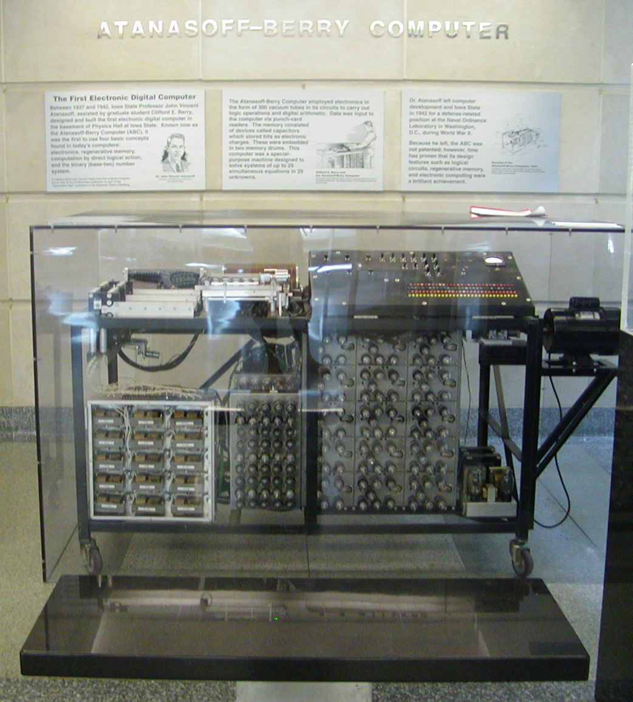
Las primeras máquinas de cómputo (años 40).
De ELIZA al big data
Evolución · Biviana

ELIZA (1966): simulaba conversación con reglas predefinidas.
- 1966 — ELIZA y los primeros sistemas conversacionales basados en reglas.
- 1980s — Las teorías lingüísticas se integran; llegan los computadores personales.
- 1990s — La World Wide Web: dejamos los ejemplos de laboratorio por lenguaje real de millones de personas.
- 2000s — Big data + deep learning: ya no programamos reglas, aprendemos patrones de miles de millones de palabras.
02
¿Qué necesita saber sobre el lenguaje?
Dora 15 min
¿Qué es una palabra?
Actividad participativa · Dora
Banco Gato Correr Corrí Corriendo
Si contaran frecuencias en texto plano, ¿cuántas palabras diferentes ven aquí?
Para un algoritmo básico: cinco cadenas de caracteres distintas.
Pero “correr”, “corrí” y “corriendo” son realizaciones de una misma unidad léxica. Aquí el español empieza a ponerse difícil.
Tokens vs. lemas
Por qué el español es difícil · Dora
Token · forma de la palabra tal como aparece en el texto.
Lema · unidad léxica de referencia (forma de diccionario).
correr corrí corriendo → correr
Sin lematización, el modelo trata “corrí” y “correr” como conceptos independientes y pierde potencia estadística.
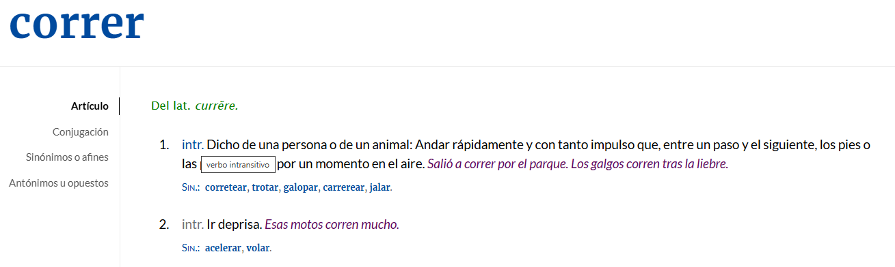
El español tiene morfología rica: un verbo puede tener decenas de formas.
Ambigüedad y homografía
El problema de “banco” · Dora
Banco 🏦 entidad financiera · 🪑 asiento para sentarse
Sobre ✉️ objeto para guardar cartas · ➡️ preposición (“sobre la mesa”)
Gato 🐱 animal doméstico · 🔧 herramienta para levantar el auto
Sin contexto lingüístico, la ambigüedad es total. Determinar la función según las palabras vecinas es una tarea fundamental.
Stopwords y entidades nombradas
Dos decisiones clave · Dora
🧹 Stopwords
de el la que
Palabras muy frecuentes que suelen aportar poca información semántica y solemos eliminar.
Cuidado: en español pueden marcar relaciones, estructura sintáctica o matices de significado.
🏷️ Entidades nombradas
No todas las palabras deben tratarse igual.
Personas Lugares Instituciones Organizaciones
Reconocer nombres propios preserva el significado del texto (NER).
Variación dialectal: ¿de qué país es tu dato?
El español no es uno solo · Dora
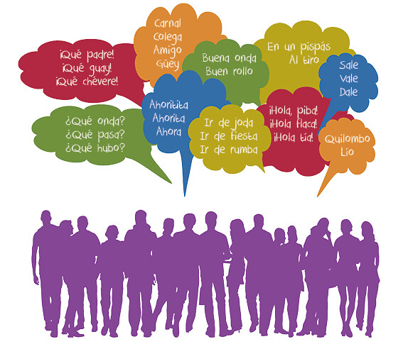
No existe un único español
Un modelo entrenado solo con datos de España tendrá dificultades con formas de Argentina, México o Colombia.
En redes sociales la variación dialectal se vuelve una fuente importante de ruido si no la tenemos en cuenta desde el inicio.
03
Del lenguaje a los datos
Karen 25 min
La ruta metodológica
Antes de abrir Python · Karen
a · Pregunta
Definir qué queremos responder.
b · Corpus
¿Es representativo? Prensa, tuits, historias clínicas…
c · Preprocesado
Limpiar HTML, emojis, ruido; minúsculas y tokenizar.
d · Anotación
Lematizar y etiquetar POS (FreeLing, Stanza).
e · Vectorización
Palabras como vectores (Word2Vec, BERT).
f · Validación
Revisión humana: ¿el modelo interpreta bien?
El pipeline, paso a paso — 1 · Texto
Del texto a los datos · Karen
1 Texto 2 Tokenizar 3 Stopwords 4 Lematizar 5 Matriz 6 Visualizar
Texto original
“La pandemia y la pospandemia hacen visible la necesidad del conocimiento. De su gestión dependen las estrategias de detección, atención y contención del coronavirus, el desarrollo del talento humano calificado y de los insumos tecnológicos para la prevención de la enfermedad y su tratamiento.”
El pipeline, paso a paso — 2 · Tokenizar
1 Texto 2 Tokenizar 3 Stopwords 4 Lematizar 5 Matriz 6 Visualizar
Nivel palabra — [La] [pandemia] [y] [la] [pospandemia] [hacen] [visible] [la] …
Nivel bigrama — [La pandemia] [pandemia y] [y la] [la pospandemia] [pospandemia hacen] …
Nivel subpalabra — [pos] [##pan] [##demia] [hacen] [vis] [##ible] [necesi] [##dad] …
El pipeline, paso a paso — 3 · Stopwords
1 Texto 2 Tokenizar 3 Stopwords 4 Lematizar 5 Matriz 6 Visualizar
Stopwords eliminadas
pandemia pospandemia visible necesidad conocimiento gestión dependen estrategias detección atención contención coronavirus desarrollo talento humano calificado insumos tecnológicos prevención enfermedad tratamiento
Quitamos “la, y, del, de, su, las, el…”. Queda el contenido con carga semántica — pero en español conviene revisar qué se elimina.
El pipeline, paso a paso — 4 · Lematizar
1 Texto 2 Tokenizar 3 Stopwords 4 Lematizar 5 Matriz 6 Visualizar
Lematización
el pandemia y el pospandemia hacer visible el necesidad de el conocimiento. de su gestión depender el estrategia de detección, atención y contención de el coronavirus, el desarrollo de el talento humano calificado y de el insumo tecnológico…
Cada forma se lleva a su lema: “hacen”→hacer, “estrategias”→estrategia, “insumos”→insumo.
El pipeline, paso a paso — 5 · Matriz
1 Texto 2 Tokenizar 3 Stopwords 4 Lematizar 5 Matriz 6 Visualizar
Representación vectorial (matriz documento-término)
conocimiento → [ 0.18, −0.42, 0.07, 0.55, −0.31, 0.12, …, 0.09 ]
la calidad de los sistemas de salud → [ −0.05, 0.33, 0.61, −0.14, 0.27, −0.48, …, 0.22 ]
Cada texto pasa a ser un vector de números: ya podemos calcular, comparar y agrupar.
El pipeline, paso a paso — 6 · Visualizar
1 Texto 2 Tokenizar 3 Stopwords 4 Lematizar 5 Matriz 6 Visualizar
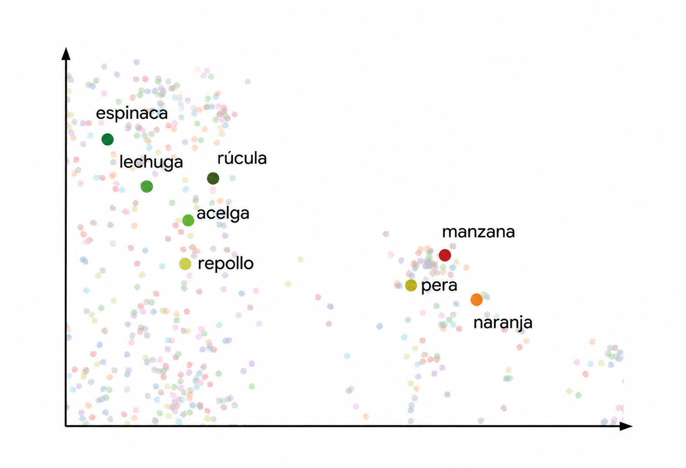
Visualización
Frecuencias, nubes de palabras, mapas semánticos, evolución temporal… El resultado se vuelve legible para humanos.
Palabras con significado parecido caen cerca en el espacio vectorial.
Todo esto: ~20 líneas de Python
Karen
import spacy, collections
from sklearn.feature_extraction.text import CountVectorizer
from wordcloud import WordCloud
nlp = spacy.load("es_core_news_sm")
docs = [nlp(t.lower()) for t in corpus]
tokens = [tok.lemma_ for d in docs for tok in d
if not tok.is_stop and tok.is_alpha]
frecuencias = collections.Counter(tokens)
X = CountVectorizer().fit_transform(corpus) # matriz doc-término
WordCloud().generate(" ".join(tokens)).to_file("nube.png")La audiencia de PyCon disfruta más entender el flujo que ver código durante 20 minutos.
Embeddings: de la matriz a los vectores densos
Representación vectorial · Karen
Embeddings estáticos
Cada palabra tiene un solo vector. Ej.: Word2Vec, FastText.
banco → [ 0.21, −0.35, 0.88, −0.04, … ]
Un único “banco” para todos los sentidos.
Embeddings contextuales
La representación cambia según el contexto. Ej.: BERT.
"El banco aprobó el crédito." → [ 0.42, −0.11, 0.63, … ] "Me senté en el banco." → [ −0.20, 0.55, 0.09, … ]
Al elegir un modelo importan: ventana de contexto · tamaño del vector (1024, 2048…) · idioma de entrenamiento · tarea para la que fue optimizado.
BERTopic: descubrir temas automáticamente
Aplicación de embeddings · Karen
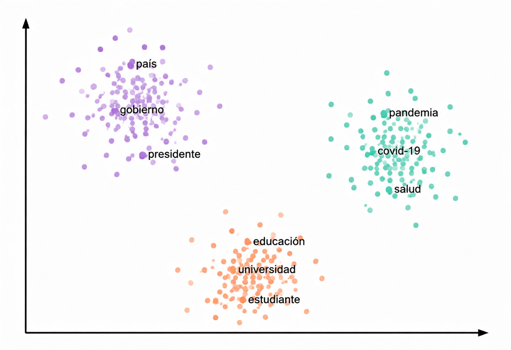
Los textos se agrupan por cercanía semántica en tópicos interpretables.
- Representación vectorial — embeddings tipo transformers.
- Reducción de dimensión — de 1024 a ~5 componentes (UMAP).
- Clustering — agrupar por distancia (HDBSCAN).
- Representación de tópicos — palabras clave por grupo (c-TF-IDF).
LLMs: modelos del lenguaje
Del conteo a la generación · Karen
¿Qué es un modelo del lenguaje?
Dado un contexto de palabras previas, asigna una probabilidad a la siguiente palabra.
*“El agua del lago Walden es tan hermosamente ___“*
Probable: azul, verde, transparente · Improbable: refrigerador
Prompting: usar un LLM
Un prompt es el texto que entregamos al modelo. Genera tokens de forma iterativa condicionado en él.
P: ¿Quién escribió El origen de las especies? R: → “Charles Darwin”
La temperatura regula qué tan “creativa” es la respuesta.
RAG: recuperar antes de responder
Retrieval Augmented Generation · Karen
1 Corpus → 2 Embeddings → 3 Vector Store (FAISS) → 4 Recuperación → 5 LLM
Chunking
Dividir el corpus en fragmentos manejables; cada uno se vuelve un embedding.
Similitud semántica
La pregunta se convierte en embedding; se recuperan los fragmentos más cercanos.
Prompt al LLM
Instrucciones + fragmentos recuperados como contexto para responder.
04
Caso 1 · Columnas de opinión
Karen 20 min
La ciencia en la esfera pública
El proyecto · Karen
El corpus
+13.000
columnas de opinión
El Tiempo El Espectador Semana
Un volumen imposible de leer manualmente.
Preguntas de investigación
- ¿Cómo aparece la ciencia en la esfera pública?
- ¿Qué pasó durante el COVID-19?
- ¿Qué actores, temas y encuadres predominan?
Resultados visuales (1/2)
Caso 1 · Karen · muchos gráficos, poco código
⊕
Nube de palabras[ pendiente de insertar ]
⊕
Evolución temporal[ pendiente de insertar ]
⊕
Frecuencias / top términos[ pendiente de insertar ]
Resultados visuales (2/2)
Caso 1 · Karen
⊕
NER · entidades (personas, organizaciones)[ pendiente de insertar ]
⊕
BERTopic · mapa de tópicos[ pendiente de insertar ]
Caso 1 · Karen
Con Python pudimos analizar miles de textos imposibles de leer manualmente.
La misma pregunta, a escala de todo un corpus.
05
Caso 2 · Salud en la esfera pública
Andrés 20 min
La misma metodología, otro dominio
Contexto · Andrés
Objetivo
- Caracterizar cómo se habla de salud en un corpus de tuits en español.
- Identificar actores, instituciones, enfermedades y medicamentos frecuentes.
- Describir la evolución temporal y temática del subcorpus.
Pipeline aplicado
- Selección del subcorpus de salud (similitud semántica).
- Descriptivos: autores, tipo de cuenta, evolución mensual.
- 13 subcategorías temáticas de salud.
- NER, POS (Stanza) y BERTopic.
- Búsqueda dirigida: lugares, instituciones, enfermedades, medicamentos.
Descriptivos generales
Caso 2 · Andrés · resultados
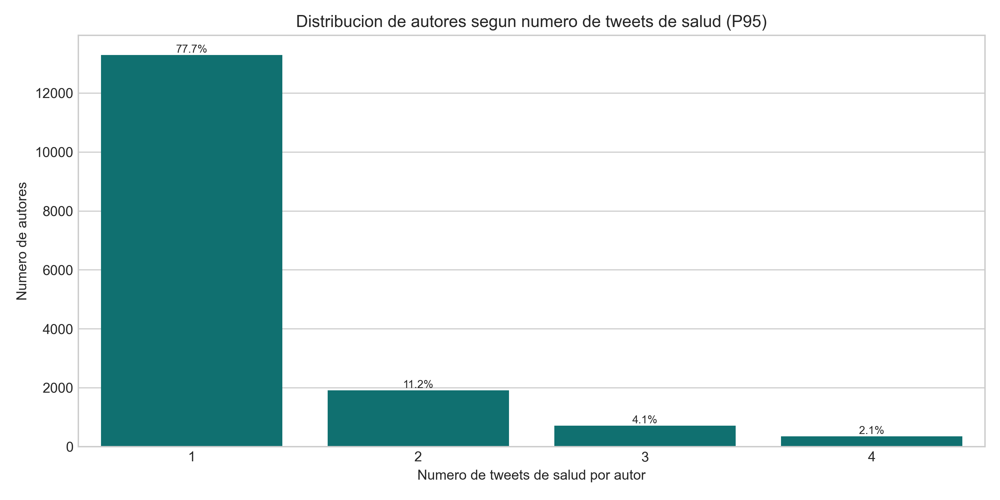
Distribución de autores según nº de tuits sobre salud.

Porcentaje mensual de tuits que mencionan salud.
Quién habla de salud
Caso 2 · Andrés · resultados
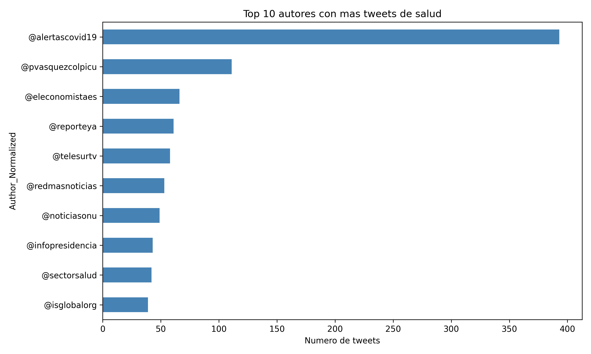
Top autores con más tuits de salud.
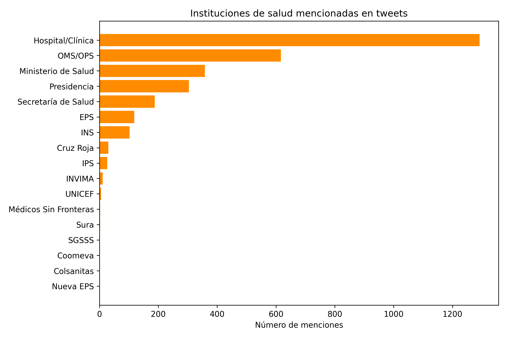
Instituciones de salud más mencionadas.
Palabras y categorías gramaticales
Caso 2 · Andrés · resultados
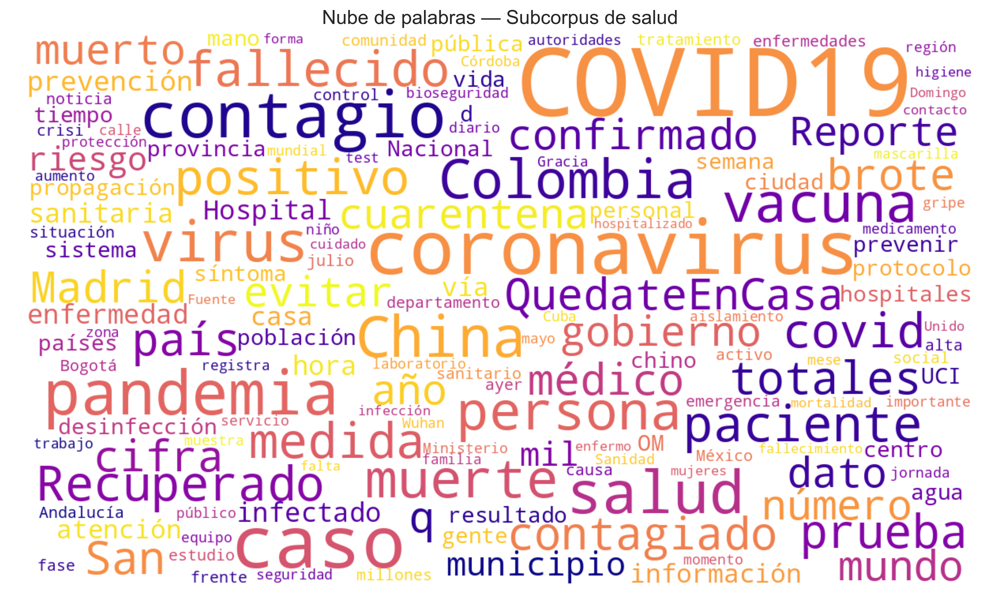
Nube de palabras (lematizadas, sin stopwords).
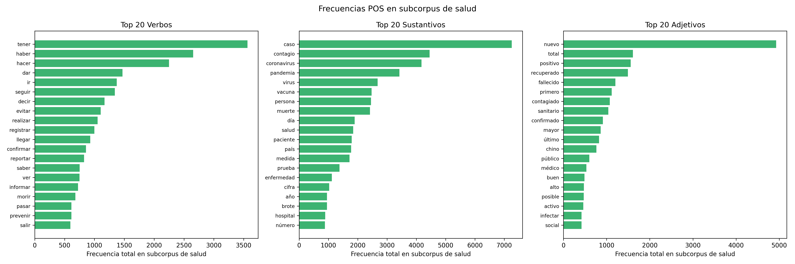
Top verbos, sustantivos y adjetivos (POS · Stanza).
Enfermedades y medicamentos
Caso 2 · Andrés · resultados

Enfermedades más mencionadas.
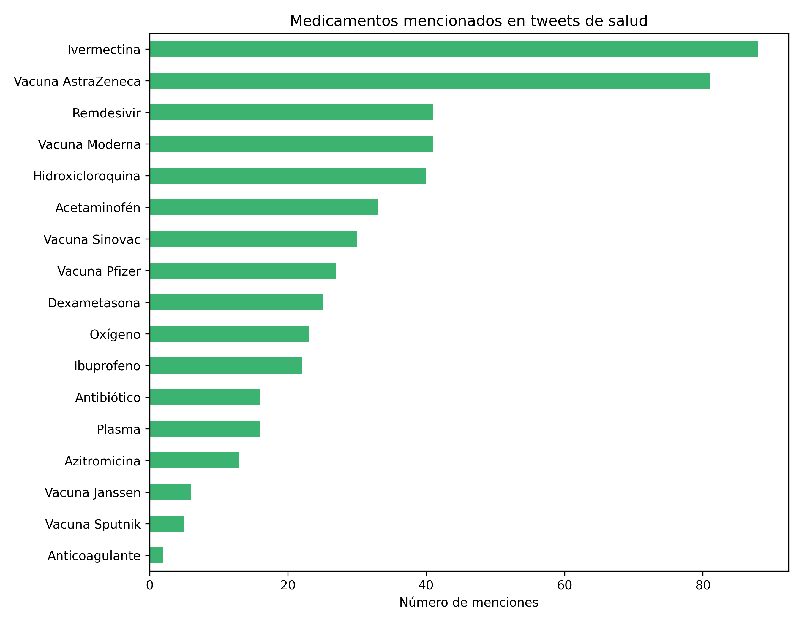
Medicamentos más mencionados.
Entidades asociadas a “salud” en 2020
Caso 2 · Andrés · el año de la pandemia

Cómo leer el grafo
- Nodo central: la palabra “salud”.
- Nodos azules: personas (PER).
- Nodos verdes: organizaciones (ORG).
- Tamaño y grosor = frecuencia de co-ocurrencia.
Hallazgos del Caso 2
Salud en Twitter · Andrés
🎯 Concentración
La conversación sobre salud se concentra en pocos autores e instituciones.
📈 Estacionalidad
La actividad varía en el tiempo, con picos ligados a coyunturas de salud pública.
🧬 Diversidad temática
Cubre muchas subcategorías, enfermedades y medicamentos específicos.
Próximos pasos — profundizar tópicos (BERTopic) por subcategoría · comparar salud con comportamientos protectores · explorar la relación entre cobertura mediática y comportamiento.
06
Práctica guiada en Colab
Todos 25 min
Manos a la obra: todo listo en Google Colab
Práctica · Todos
Sin instalar nada
- ✅ Google Colab con todo preinstalado (sin errores de librerías).
- 📦 Un corpus pequeño: 200 tuits o 200 titulares de prensa.
- ⏱️ No reproducimos todo el pipeline: hacemos una misión guiada.
- 🤝 Trabajamos juntos, paso a paso.
Escanea para abrir el notebook
QR
[ pendiente ]
Reemplazar por el QR del Colab una vez publicado.
La misión: 6 pasos
Ejercicio guiado · Todos
1 · Cargar el corpus
Leer los 200 textos en el notebook.
2 · Tokenizar
Dividir cada texto en palabras.
3 · Eliminar stopwords
Quitar palabras vacías.
4 · Calcular frecuencias
Contar los términos más comunes.
5 · Nube de palabras
Visualizar el resultado.
6 · Responder
¿Cuáles son los 5 temas principales del corpus?
Para llevarse a casa
El lenguaje no es solo una columna de strings.
Es un sistema complejo, dinámico y profundamente contextual. Muchas decisiones críticas ocurren antes del modelo — y con Python podemos convertir ese texto en datos que hablan.
¡Gracias!
Biviana Suárez Dora Alzate Karen Gómez Andrés Puerta
Más allá del string · PyCon Colombia 2026